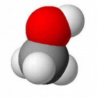

Metanol
Metanolt (más néven metilalkoholt) a legkönnyebben az energianyerésre ma használt szénhidrogénekbõl lehet elõállítani. Jelenleg folyik is a gyártás ezzel az egyszerû, de igen energiaigényes módszerrel (a földgáz energiatartalmának a fele az átalakításra megy el). Az általánosan használt, energiafaló eljárásban a földgázt elégetik, majd az így nyert szén-dioxidból csinálnak hidrogén hozzáadásával több lépésben metanolt. Az Oláh-féle módszerben ezzel szemben a földgáz fõ komponensét, a metánt közvetlenül metilalkohollá alakítják. De más utak is vannak, a szükséges szén-dioxidot a levegõbõl vagy akár a gyárkémények füstjébõl is ki lehetne nyerni. És ki is fogjuk, ha majd megéri - állítja a tudós. Szavai arra is rávilágítanak, hogy a természet egyelõre lényegesen jobb kémikus az embernél: a fotoszintézis során a növények szén-dioxidot vonnak ki a légkörbõl, mégpedig egy ingyenes és korlátlan energiaforrásra, a Napra támaszkodva.